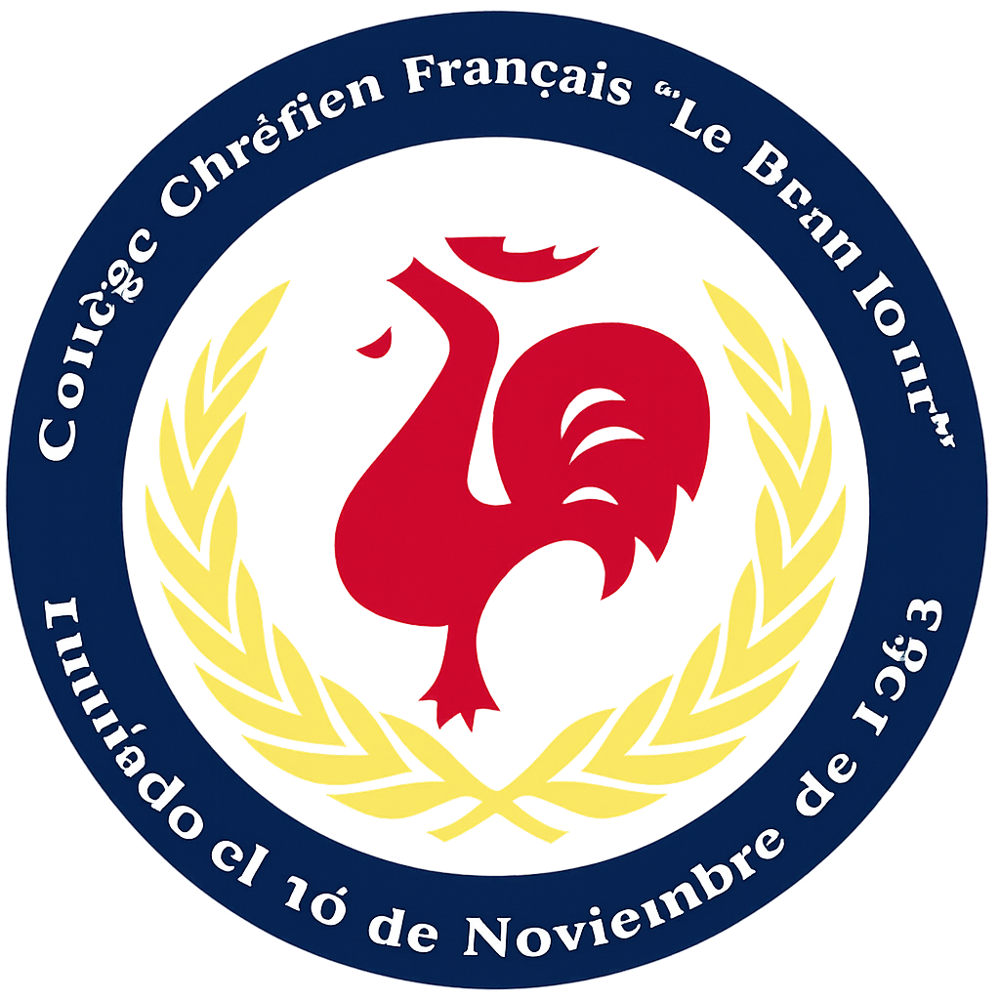

Presiona "Comenzar" para cargar el quiz.
Material de estudio para 8° Básico
Bienvenido a tu Quiz Dinámico de Funciones (Lineales y Afines), diseñado por el Colegio Le Beau Jour.
Te recomiendo tener a mano tu cuaderno o apuntes de Funciones. Así podrás resolver tus dudas y reforzar los conceptos al instante!